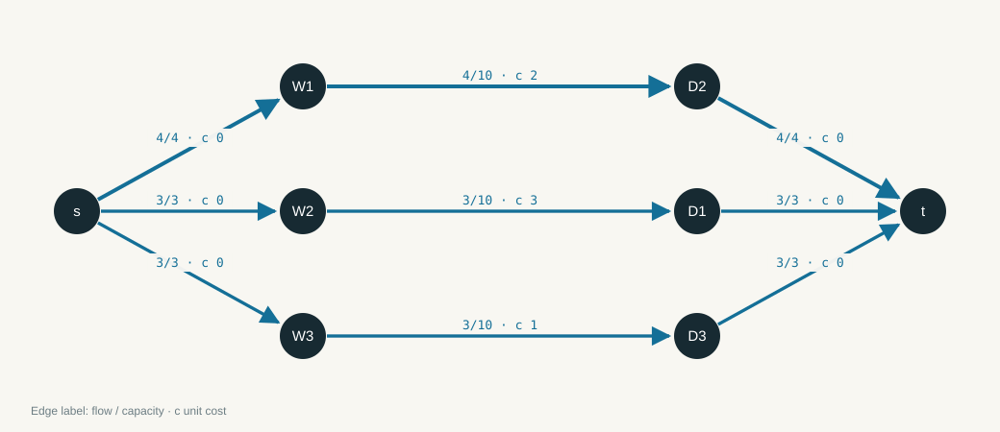
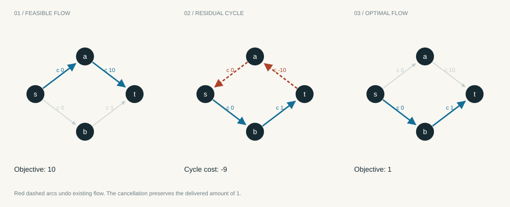
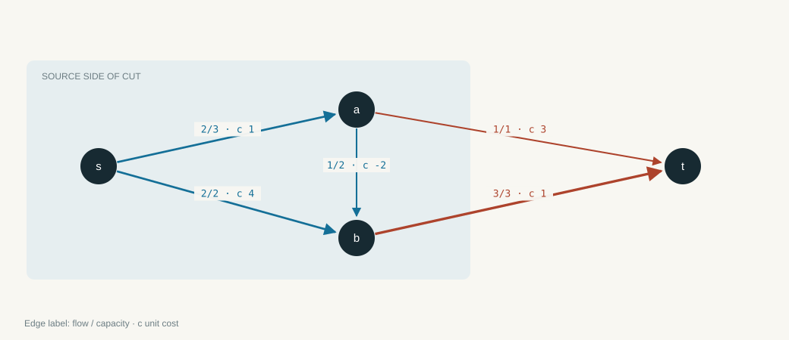
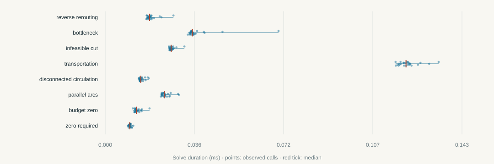

Capacitated
minimum-cost flow
A feasible flow is improved by cancelling negative-cost residual cycles. Every terminal claim is checked from the original network and a separate certificate.

Rerouting through reverse edges
Breadth-first search first selects s → a → t, with cost 10. The residual cycle uses two reverse arcs to remove that choice and two forward arcs to send the same unit along the cost-1 route.

delivered: 1 → 1 cycle amount: 1 cycle unit cost: -9 objective: 10 → 1
The cancellation changes the allocation while preserving conservation at every node. Final residual reduced costs are all nonnegative, so no further negative cycle exists.
Transportation allocation
| Warehouse | D1 · 3 units | D2 · 4 units | D3 · 3 units |
|---|---|---|---|
| W1 | 0unit cost 9 | 4unit cost 2 | 0unit cost 5 |
| W2 | 3unit cost 3 | 0unit cost 8 | 0unit cost 4 |
| W3 | 0unit cost 6 | 0unit cost 4 | 3unit cost 1 |
Cell: allocated units, then unit cost. Each allocation arc has capacity 10; source and sink arcs impose warehouse supply and destination demand.
Observed optimization steps
The deterministic initial allocation costs 56. The solver then performs 2 cycle cancellations to reach cost 20.
The optimum is independently supported by the residual-potential certificate, rather than by the apparent quality of the allocation.
minimize Σ cost[e] × flow[e] subject to 0 ≤ flow[e] ≤ capacity[e] outflow − inflow = 10 at s outflow − inflow = -10 at t outflow − inflow = 0 elsewhere
Primal and residual certificates
The verifier reads only the original network and result. It checks every capacity, every node balance, the exact objective, and every positive-capacity residual edge. It does not call the solver's BFS or Bellman–Ford routines.
Transportation node checks
| Node | Potential | Net outflow |
|---|---|---|
| D1 | 0 | 0 |
| D2 | 0 | 0 |
| D3 | 0 | 0 |
| W1 | -2 | 0 |
| W2 | -3 | 0 |
| W3 | -1 | 0 |
| s | -3 | 10 |
| t | 0 | -10 |
Rerouting residual-edge checks
| Residual arc | Cost | p[u] | p[v] | Reduced |
|---|---|---|---|---|
| s → a | 0 | -1 | -1 | 0 |
| a → t | 10 | -1 | 0 | 9 |
| b → s | 0 | -1 | -1 | 0 |
| t → b | -1 | 0 | -1 | 0 |
Potential differences telescope around any cycle. Nonnegative reduced residual costs therefore exclude a negative-cost cycle. Together with feasibility, this certifies a minimum-cost flow of the required value.
The transportation certificate checks 18 residual arcs. These are mathematical certificates for this bounded model.
Infeasibility and budget limits

INFEASIBLE
required: 5 delivered: 4 cut source side: ['s', 'a', 'b'] cut capacity: 4
UNKNOWN
A zero cancellation budget leaves the rerouting case at cost 10. The flow meets the required amount, but a negative cycle remains. The result certifies a feasible incumbent only.
Negative-cost cycles are supported, including disconnected bounded circulations. Zero required transfer can therefore have negative optimal cost. Self-loops, lower bounds and unbounded capacities are outside this model.
Validation and local measurements
| Scenario | Status | Flow / request | Objective | Cancellations |
|---|---|---|---|---|
| reverse rerouting | OPTIMAL | 1/1 | 1 | 1 |
| bottleneck | OPTIMAL | 4/4 | 9 | 1 |
| infeasible cut | INFEASIBLE | 4/5 | 14 | 0 |
| transportation | OPTIMAL | 10/10 | 20 | 2 |
| disconnected circulation | OPTIMAL | 2/2 | 0 | 1 |
| parallel arcs | OPTIMAL | 3/3 | 7 | 1 |
| budget zero | UNKNOWN | 1/1 | 10 | 0 |
| zero required | OPTIMAL | 0/0 | -6 | 1 |

650 randomized unit-test networks are compared with exhaustive assignment enumeration. A separate preserved corpus contains 120 networks / 5,000 assignments, including negative costs, zero capacities, parallel arcs and disconnected components.
These tiny local synthetic measurements are not production benchmarks. Cycle cancellation is pseudopolynomial without the explicit budget; tie-breaking and input order influence work. Source hashes, every input, exact traces, certificates and raw timing rows are retained.